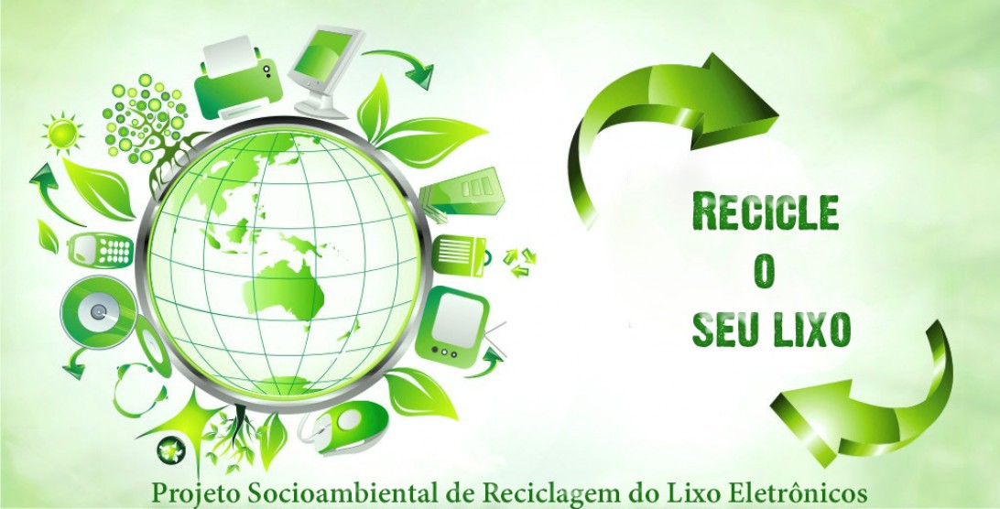

O porque devemos reciclar residuos eletrônicos?
Os equipamentos elétricos e eletrônicos possuem diversos componentes tóxicos em suas estruturas. Se descartados de maneira incorreta, esses resíduos podem contaminar o solo e os lençóis freáticos, colocando em risco a saúde pública.
Qual o tamanho do problema?
Os números comprovam isso. Segundo o Monitor Global de Lixo Eletrônico 2020 da ONU, relatório mais recente com dados mundiais de descarte de aparelhos eletrônicos, o mundo gera mais de 50 milhões de toneladas deste tipo de lixo por ano – o equivalente ao peso de 265 baleias-azuis em celulares, notebooks, eletrodomésticos e outras peças eletrônicas descartadas –, na maioria das vezes, de forma incorreta.